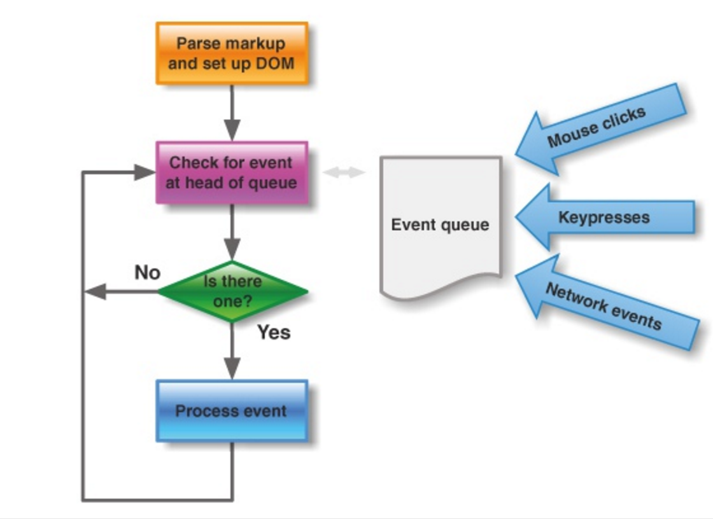
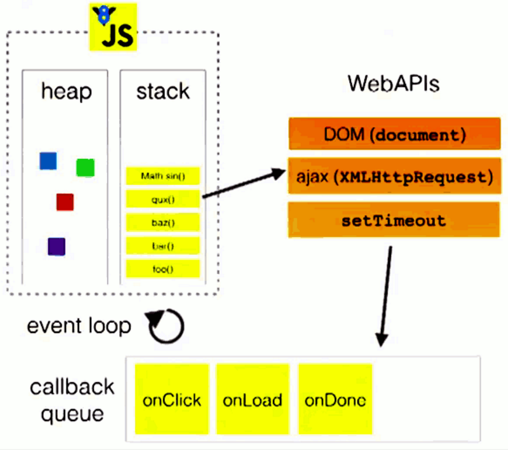

本文是在看过一些文章和视频之后，结合自己的理解，做的一个汇总，如果发现理解错误的地方，请及时指出便于更正。 Orz
一、单线程
javascript单线程执行，是由浏览器的场景决定的，避免了复杂的同步问题。HTML5提出「Web Worker」标准，允许js创建多个线程，但子线程仍受主线程控制，且不能操作DOM，js的本质未变。
二、任务队列 & 事件循环

任务分为：同步任务（synchronous）、异步任务（asynchronous）；同步任务被放入主线程，异步任务放入任务队列（task queue）。任务队列中的异步任务一旦运行有了结果，那么会在任务队列中放置一个对应的事件，当主线程中的同步任务全部执行完毕以后，会检查任务队列，将包含对应事件的异步任务放入主线程，然后主线程会执行所有任务，执行完毕以后再次检查task queue。这样不断循环的过程就叫做「event loop」。（需要注意的是，loop的时间精度在4ms-16ms之间，oldIE会比较大，部分现代浏览器会判断pc是否外接电源来调整精确度）
task queue中的「事件」包括：IO设备（keypress,network events like ajax…）、鼠标点击、页面滚动等。事件被添加到主线程后，在下一个loop中执行的是该事件的「回调函数」，所以async task都有回调函数。
task queue是「先进先出」队列结构，首先注册的事件第一个进入主线程等待执行。但「定时器」功能还会校验该事件的时间，到达时间后的async task才进入主线程。

- 如上图，主线程的运行会产生「堆 heap」和「栈 stack」，「执行栈」（主线程）中的代码可能会通过调用「WebAPIs」在task queue中创建async task，得到结果的async task会将「回调函数」放入callback queue中，并把相应事件放入task queue中，当「执行栈」中的代码执行完毕，就会依次将task queue中所有符合时间要求（定时器）的事件放入「执行栈」中，并在下一个event loop中执行对应的「回调函数」。
三、定时器
setTimeout
setTimeout 与 setInterval 实现原理一致，setTimeout(fn,0) 会将「事件」放入task queue的尾部，在下一次loop中，当「同步任务」与task queue中现有事件都执行完之后再执行。
setTimeout存在「时间精度问题」，至少在4ms以上，根据浏览器、设备是否插电源等有所不同，最多能达到近16ms。为了解决这个问题，加快响应速度，产生了「setImmediate API 与 setImmediate.js项目」与「requestAnimationFrame」，前者解决「触发之后，立即调用回调函数，希望延迟尽可能短」的情况，后者可以实现「流畅的JS动画」（见下文）
setInterval
setInterval如果使用「固定步长」（间隔时间为定值），例如200ms，那么它可能会在距离js执行开始的205ms，405ms，605ms…时将「事件」放入task queue中的末尾等待执行。
问题一：
如果主线程（或执行栈）中的任务与task queue中的其它任务再加上setInterval中的回调函数的总执行时间超过了「固定步长」（200ms），那么setInterval的回调函数就会「延后执行」，浏览器会保证「当任务队列中没有定时器的任何其它代码实例时，才将新的定时器添加到任务队列」，长时间运行就会产生大量「积压」在内存中待执行的函数，如果主线程终于空闲下来，那么就会立刻执行「积压」的大量函数，中间不会有任何停顿。那么真正的执行时间可能就变成了（假设主线程执行时间每loop固定为300ms）：305ms、605ms、605ms、905ms、1205ms、1205ms…就会产生「跳帧」。例子如下：（补充：Date.now IE9以上支持，相对new Date()来说减少创建一次对象的时间和内存）
1 | var i = 0, itv; |
但在试验中（ff，chrome，safari），只有firefox发生了「积压」效果，具体表现为：会有几个「run:i」同时打印到控制台。推测是webkit内核对这块做了优化。如果一定要使用setInterval的话，问题一（避免事件积压）的解决办法有（摘自『javascript高级程序设计』）：
(1) 间隔时间使用百分比: 开始值 + (目标值 - 开始值) * （Date.now() - 开始时间）/ 时间区间；
(2) 使用链式setTimeout；
问题二：
「setTimeout同样有这个问题！」通过切换标签页等操作让页面在后台运行，循环仍在继续，只是「时间间隔变长」了而已。另外，当动画发生在页面viewport可视区域以外的时候，中断动画运行，才是性能更优的选择（raf就是如此）。
问题三：
在使用setTimeout制作JS动画的时候，时间间隔是不好把握的，如果假设某浏览器的渲染速率为60Hz，那么就是16又2/3毫秒渲染一次，为了匹配这个速率，我们需要确保「setTimeout中设定的时间间隔」+「回调函数执行时间」+「在显示器上绘制/改变动画的下一帧的时间」刚好等于「16 2/3ms」，假设3者相加时间为15ms，那么每10『(16 2/3) / ((16 2/3)- 15)=10』帧会多出一帧来，那么结果就是在第10帧的时候，动画函数连续执行了两次，于是动画不再平滑了…（详见这篇啰嗦的文章），更不要说还要考虑setTimeout的「时间精度」问题（4ms 一次 event loop，也即是最少4ms才检查一次setTimeout的时间是否达到）
requestAnimationFrame
requestAnimationFrame 会把每一帧中的所有DOM操作集中起来，在「一次重绘或回流中就完成」，并且「重绘或回流的时间间隔紧紧跟随浏览器的刷新频率」，一般来说，这个频率为每秒60帧。
在隐藏或不可见的元素中，requestAnimationFrame将不会进行重绘或回流，这当然就意味着更少的的cpu，gpu和内存使用量。
1 | var i = 0, _load = +new Date(), loop = 1000/60; |
与setTimeout相比，requestAnimationFrame不是自己指定回调函数运行的时间，而是跟着浏览器内建的刷新频率来执行回调，这当然就能达到浏览器所能实现动画的最佳效果了。
但另外一方面，requestAnimationFrame的预期执行时间要比setTimeout要长，因为setTimeout的最小执行时间是由「第7点：浏览器的时间精度」决定的，但raf会跟随浏览器DOM的刷新频率来执行，理论为16 2/3ms。但是，在setTimeout中如果进行了DOM操作（尤其是产生了重绘）通常不会立即执行，而是等待浏览器内建刷新时才执行。因此对于「动画」来说的话，raf要远远比setTimeout适合得多。
rAF与setTimeout性能比较：（据某些人说，早期的raf性能堪忧，尤其是在手机上，反而不如setTimeout）
macbook pro chrome 46.0.2490.86 (64-bit)：
(1) setTimeout用时：37280ms
(2) raf用时： 18360ms
setTimeout:
1 | var raf, i= 1, body = document.querySelector('body'); |
rAF:
1 | var raf, i= 1, body = document.querySelector('body'); |
- 由于requestAnimationFrame的特性之一：会把每一帧中的所有DOM操作集中起来，在「一次重绘或回流中就完成」。因此有github项目fastdom，我会在另一篇文章中详细分析fastdom的实现思路与代码。
四、更快的异步执行
不是为了「动画」，而是单纯的希望最快速的执行异步回调：
使用异步函数：setTimeout、raf、setImmediate：
- setTimeout会有「时间精度问题」，经过本地试验，chrome用时约1.5ms（连接电源）、safari用时约5ms、firefox用时约0.3ms（为何这么快…）
- raf会跟随浏览器内置重绘页面的频率，约60Hz，理论上平均时间为：1000/60/2ms，chrome上测试：第一次时间多在1ms内，第二次调用时间大于10ms。
- setImmediate：仅IE10支持，尚未成为标准。但nodeJS已经支持并推荐使用此方法。另外，github上有setImmediate.js项目，用其它方法实现了setImmediate功能
测试：
setTimeout:
1 | var now = function(){ |
raf:
1 | var now = function(){ |
其它方式实现异步调用：
- onmessage：和iframe通信时常常会使用到onmessage方法，但是如果同一个window postMessage给自身，其实也相当于异步执行了一个function。
1 | var doSth = function(){}; |
- 另外，还可以利用script标签，实现函数异步执行（把script添加到文档也会执行onreadystatechange 但是该方法只能在IE下浏览器里使用），例如：
1 | var newScript = document.createElement("script"); |
理论上，执行回调函数的等待时间排序：
setImmediate < readystatechange < onmessage < setTimeout 0 < requestAnimationFrame
- 另外，在「setImmediate.js项目」中说了它的实现策略，对上文进行一个有力的补充：
1 | ## The Tricks |
setImmediate API：未完待续…
部分参考资料：
JavaScript 运行机制详解：再谈Event Loop
http://www.ruanyifeng.com/blog/2014/10/event-loop.html
—相关视频：Help, I’m stuck in an event-loop https://vimeo.com/96425312更快的异步执行
http://www.alloyteam.com/2014/03/faster-asynchronous-execution/Enable REQUEST_ANIMATION_FRAME on all ports?
https://lists.webkit.org/pipermail/webkit-dev/2011-September/018095.html拥有更好性能的requesAnimationFrame
http://sentsin.com/web/949.html性能更好的js动画实现方式——requestAnimationFrame
http://www.cnblogs.com/2050/p/3871517.html
by tianyn1990